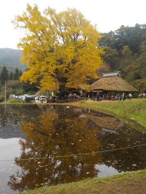
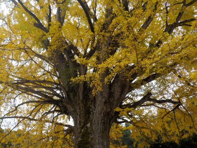
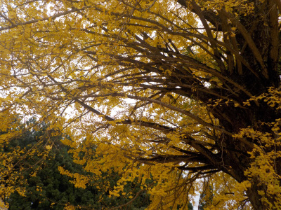
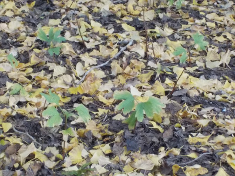
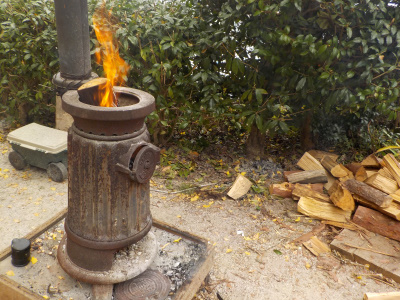
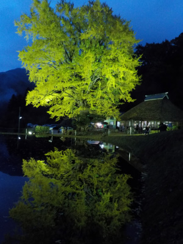
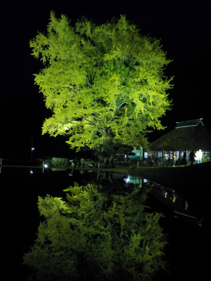

金言寺のイチョウは素晴らしい。
更新日 : 2019/11/03
いい景色が見れました。







昼に一度行って、日暮れぐらいに再び行きました。どちらも素晴らしかったです。
長く滞在しましたが、飽きなかったです。
今度は晴天の日に見たいな。
島根県仁多郡奥出雲町大馬木1060
更新日 : 2019/11/03
いい景色が見れました。







昼に一度行って、日暮れぐらいに再び行きました。どちらも素晴らしかったです。
長く滞在しましたが、飽きなかったです。
今度は晴天の日に見たいな。
関連情報